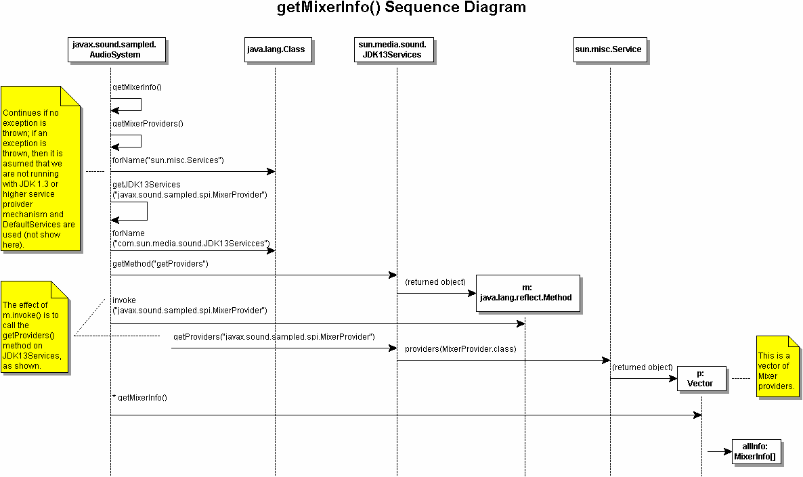

AudioSystem.java 서비스 프로바이더나 API 구현자를 위해서(때문에), Java Sound 의 원시 코드의 개요에 대해 설명합니다.
javax.sound.sampled.AudioSystem 는, 믹서나 라인이라고 하는 자원을 취득하기 위한 Java Sound 에의 엔트리 포인트가 됩니다. AudioSystem 의 각 메소드에서는,MixerProvider[],FormatConversionProvider[],AudioFileReader[],AudioFileWriter[] 등, 서비스의 프로바이더가 취득됩니다. 다음에, 메소드에서는, 특정의 정보의 취득이나, 특정의 태스크를 합니다. 이러한 메소드의 동작은, 많은 점으로써 유사하고 있습니다. getMixerInfo() 의 동작을 봅시다.
다음의 그림은,AudioSystem.java 의 getMixerInfo() 의 동작 플로우입니다.

AudioSystem 의 getMixerInfo() 는, 우선getMixerProviders() 를 호출합니다. 이것은 AudioSystem 의 private static 메소드입니다. getMixerProviders() 는, 우선 sun.misc.Service 의 로드를 시도합니다. 예외가 throw 되었을 경우는, JRE 1.3 보다 전의 버젼이 사용되고 있어 서비스 프로바이더의 룩 업 기구가 없는 것을 나타내고 있습니다. 예외가 throw 되면(자),sun.media.sound.DefaultServices 를 사용해 서비스 프로바이더가 취득됩니다 (위의 그림에는 나타나고 있지 않습니다). 1.3 의 기구가 갖춰지고 있는 경우는, 윗 그림과 같이 getJDK13Serives() 가 불려 갑니다. 이 때, 인수로서 「javax.sound.sampled.spi.MixerProvider」 가 지정됩니다.
getJDK13Services() 도,AudioSystem 의 private static 메소드입니다. 이 메소드는,「com.sun.media.sound.JDK13Services」 의 클래스의 로드를 시도해 성공했을 경우는, 이 클래스를 「Class jdk13Services」 로 설정합니다. 다음에, 약간 기교적입니다만,Class.getMethod() 를 사용해 jdk13Services 의 getProviders() 메소드를 가져옵니다. 이것은 Method m 객체로서 돌려주어집니다. 다음에, 이 메소드가 불려 가 그 결과 JDK13Services 에 대해서 getProviders( 「javax.sound.sampled.spi.MixerProvider」) 가 불려 갑니다. 여기에서는,sun.misc.Service 의 providers() 메소드를 사용해, 믹서 프로바이더의 벡터 MixerProvider[] 가 돌려주어집니다. 다음에, 이 벡터의 각 요소에 대해 MixerProvider 의 getMixerInfo() 메소드가 불려 가,Mixer.info 가 돌려주어집니다. 이것은, 모든 믹서 프로바이더의 전믹서에 관한 정보입니다.
다른 서비스도 같은 구조로 처리됩니다. 예를 들어,getTargetEncodings() 는 getFormatConversionProviders() 를 호출해,getAudioFileFormat() 는 getAudioFileReaders() 를 호출합니다만, 이것들은 getMixerProviders() 에 유사한 구조가 되어 있습니다.